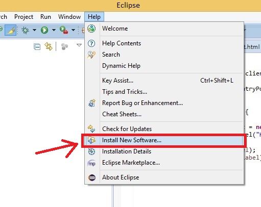

Look up "jdk" and select "Java SE Development Kit 8"
JDK DownloadCheck the agreement button and select the appropriate download for your operating system
Open your downloads folder and run the JDK. Follow the instruction to install the JDK
Find whether you're using a 32-bit or 64-bit operating system. This can usually be found in the "Properties" description of your computer
The System Properties should show either 32-bit or 64-bit but if neither is present, it may be 32
Look up "Eclipse Download" select "Eclipse IDE for Java Developers"
Eclipse DownloadSelect your operating system
Click the green button to start downloading Eclipse
Right click the downloaded zip and extract the contents. The zip can be thrown away
The extracted folder will contain "eclipse.exe" which opens Eclipse. You may want to create a short-cut on your desktop
Open Eclipse and go to Help -> Install New Software...
Specify Work with: https://dl.google.com/eclipse/plugin/4.4
Check "Google Plugin for Eclipse (required)"
Follow the instructions. Don't forget to accept the agreement
Look up and download the newest GWT SDK. This can also be done in the same way we downloaded the GWT plugin in Eclipse, but this may give you an older version
Extract the zipped file just like before
In Eclipse, got to Window -> Preferences -> Google -> Web Toolkit -> Add -> Browse. Find your GWT 2.7 SDK
Download the newest gwt-dnd Jar
Add the following line to your *.gwt.xml
<inherits name='com.allen_sauer.gwt.dnd.gwt-dnd'/>
Right-click your project -> Build Path -> Configure Build Path... -> Add External Jars. Find the gwt-dnd Jar your downloaded.